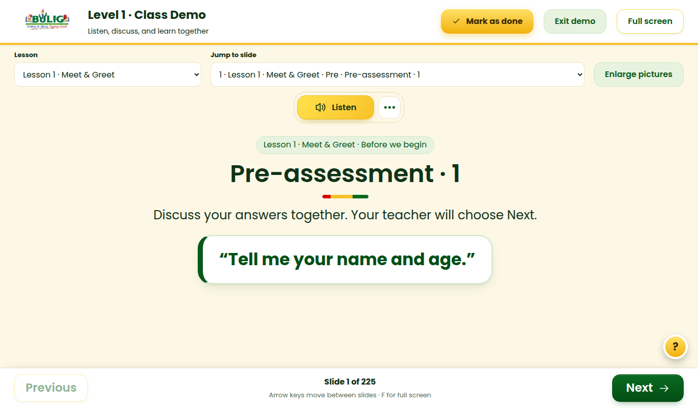

The separate Teaching guide page is a long copy of the PDF text (about 7,500 words, with page numbers and broken lines). Instead, while presenting, the teacher taps Lesson plan and sees the plan for the lesson on screen right now.
Teacher menu after both changes6 items, every icon different
Class Demo with the new “Lesson plan” buttonOpens a side panel for the current lesson. The slide stays visible behind it.

Opens the real page of the DepEd module, with its tables and pictures.